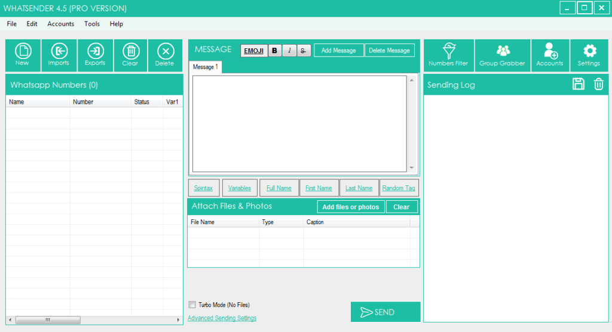
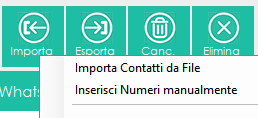
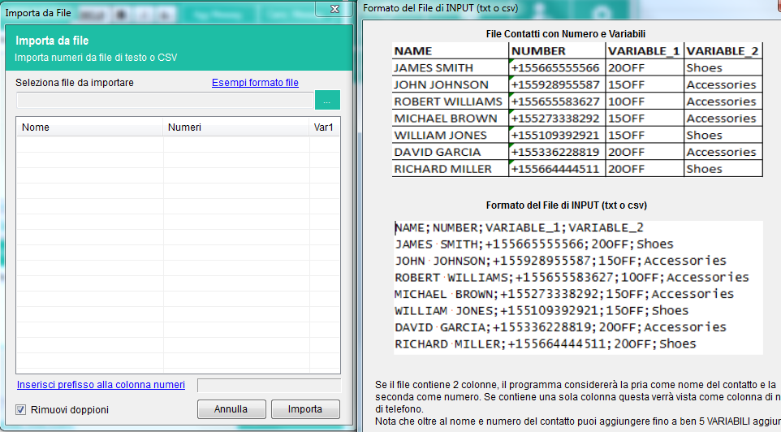
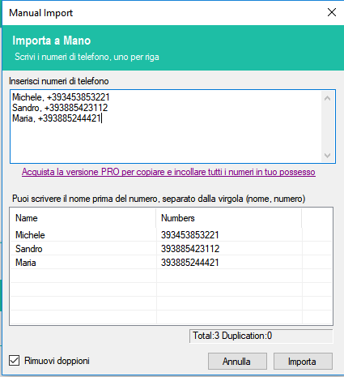
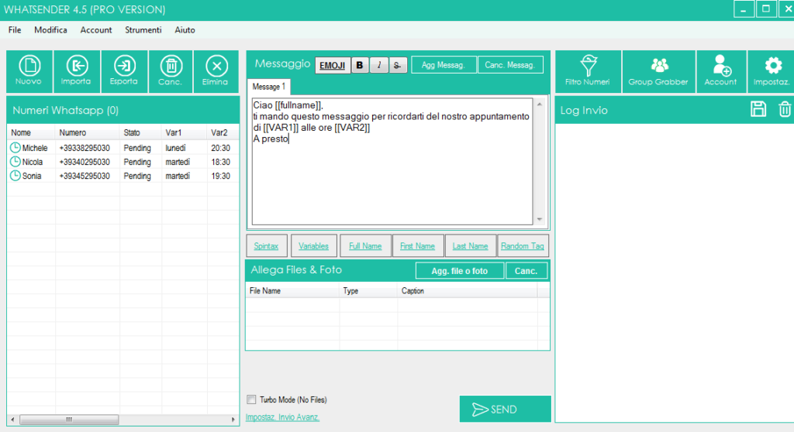
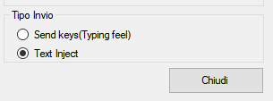

WHATSENDER è un software disponibile anche in versione GRATUITA progettato per chi vuole inviare messaggi Whatsapp direttamente da PC in modo semplice ed efficace.
WhatSender utilizza la tecnologia di Whatsapp Web ma aggiunge funzioni utili per fare Whatsapp Marketing e inviare messaggi Whatsapp a più utenti contemporaneamente. Ecco i motivi per cui dovresti utilizzare WhatSender per contattare tutti i tuoi amici/parenti o potenziali clienti per fare Whatsapp marketing a livello professionale:
- Crea e invia messaggi personalizzati (con nome del destinatario) direttamente dal tuo PC
- Importa contatti sia manualmente che da file (CSV o TXT)
- Invia messaggi Whatsapp anche ai contatti che non hai in rubrica
- Multi-Account: invia messaggi whatsapp usando più account (messaggi verranno inviati in “rotazione”)
- Crea automaticamente più varianti del messaggio da inviare a tutti i contatti per evitare spam
- Possibilità di vedere l’esito dell’invio della campagna
- Possibilità di impostare un ritardo tra i messaggi per evitare il ban
- Cattura tutti i membri di un Gruppo Whatsapp per contattarli tramite WhatSender
- Crea e invia messaggi Whatsapp con foto e video virali
- Data una lista di numeri di telefono, potrai verificare quelli che sono Whatsapp e quelli non-Whatsapp
Per iniziare scarica e installa il programma in versione GRATUITA dal link seguente:
NOTA: La versione FREE di WhatSender consente di inviare illimitati messaggi. L’unica limitazione è l’impossibilità di importare i contatti da file o di copiarli e incollarli in modalità batch.
Questo software ti permette di comunicare con destinatari che ti conoscono e si aspettano di ricevere tuoi messaggi (es. cliienti , studenti , pazienti , etc..), e non è uno strumento di spam, quindi non siamo responsabili in caso di ban.
Subito dopo l’installazione vedrai la seguente schermata principale:

Dopo aver aperto il programma puoi impostare la lingua italiana cliccando sul menu TOOLS e poi sull’opzione LANGUAGE, come mostrato nella figura seguente:

GUIDE:
-
Come Inviare Messaggi Whatsapp da PC (a più contatti)
-
Altre funzionalità di Whatsender
-
Video Tutorial
COME INVIARE MESSAGGI MULTIPLI WHATSAPP da PC
STEP 1. Importa o aggiunti i tuoi contatti
La prima cosa da fare è importare i contatti, ossia i destinatari del tuo messaggio. Clicca in alto a sinistra sul pulsante IMPORTA e appariranno due opzioni: importa contatti da file oppure inserisci numeri manualmente

Se clicchi su Importa Contatti da File, si aprirà una nuova finestra in cui potrai selezionare e importare i numeri da un file CSV o TXT. In questi file potrai anche inserire il nome del contatto (nella prima colonna) e il numero (nella seconda colonna) ed eventuali altre variabili, fino a 5.

Il vantaggio di inserire anche il nome, oltre al numero, è che in questo modo si possono creare e inviare messaggi PERSONALIZZATI, con il nome del destinatario che appare in automatico nel messaggio. L’uso di ulteriori variabili ti consentirà di inviare messaggi ancora più personalizzati come ad esempio comunicazioni, appuntamenti oppure offerte ad-hoc a ciascun tuo cliente.
Un altro grande vantaggio di usare WhatSender è che potrai inserire anche numeri di contatti che non sono salvati nella tua rubrica (quindi si supera il limite della funzione broadcast presente in Whatsapp)
Cliccando su Inserisci Numeri manualmente si aprirà invece la finestra sotto raffigurata in cui potrai scrivere a mano il numero (e anche il nome del contatto)

Nota: Con la versione FREE del programma la funzione di importazione file da file è disattivata, cosi come anche la funzione di copia e incolla.
Una volta aggiunti o selezionati i contatti clicca in basso su IMPORTA.
STEP 2. Crea il messaggio da inviare
Adesso puoi scrivere il messaggio da inviare a tutti i contatti. Scrivi il messaggio nel box al centro del programma.

Nell’esempio di figura noterai che i contatti caricati, oltre al numero di telefono contengono altre informazioni come il Nome e altre variabili (che posso ad esempio indicare un giorno o un orario di un appuntamento). Quindi nel testo del messaggio basterà richiamare tali variabili tramite i pulsanti di “Tags” presenti sotto all’area del messaggio.
Potrai creare anche diverse versioni del messaggio, in modo che i destinatari non riceveranno tutti lo stesso messaggio (questo metodo è importante se devi inviare centinaia di messaggi ed evitare di essere “bannati” su Whatsapp). Per inserire una nuova versione del messaggio clicca in alto su “Agg. Messaggio” e procedi alla scrittura dello stesso.

Sotto il box dei messaggi c’è anche un link per poter aggiungere Emoji e diversi link per inserire le variabili del nome o cognome al tuo messaggio

Se inserisci delle emoricons nel messaggio, affinchè queste appaino correttamente clicca in basso su “Impostazioni Invio Avanzato” e poi dalla finestra che si apre, seleziona la modalità invio “Text Inject” (in basso a destra):

Prima dell’invio potrai anche allegare delle immagini o video o documenti. Ti basterà usare la sezione in basso per caricare nel messaggio una foto o un video:

STEP 3. INVIA IL MESSAGGIO
Una volta che i contatti sono importati e il messaggio è pronto, clicca su SEND in basso per procedere all’invio.

Si aprirà una prima finestra con alcuni avvisi. Poi si aprirà una seconda finestrella che ti chiederà se vuoi inviare con un nuovo account Whatsapp, con uno già memorizzato nel programma oppure inviare usando la funzione “multi-account” che manda un tot di messaggi per ogni account Whatsapp inserito nel software.

Per aggiungere gli account whatsapp nel programma basta cliccare in alto su ACCOUNT, scrivere un nome indicativo per l’account e poi cliccare su ADD (funzione attiva solo nella versione PRO).

Se scegli di inviare da un nuovo account Whatsapp (e non da uno memorizzato) si aprirà una finestra di Google Chrome con un codice QR. A questo punto utilizza lo scanner QR all’interno di WhatsApp per eseguire la scansione del codice QR. Per fare ciò, apri WhatsApp sul tuo telefono e:
> Su Android: vai nella schermata Chat > Menu > Web WhatsApp.
> Su iPhone: vai su Impostazioni > WhatsApp Web.
> Su Windows Phone: vai su Menu > WhatsApp Web
Quindi, scansiona il QR Code sullo schermo del tuo computer avvicinando ad esso il tuo telefono.

Appena il codice QR viene scansionato dal cellulare il messaggio di Whatsapp verrà inviato a tutti i destinatari!
ALTRE FUNZIONALITA’ DI WHATSENDER
WhatSender si caratterizza per la sua interfaccia molto semplice ed intuitiva con tutte le funzioni a portata di mano.

Oltre alle funzioni base appena viste sopra come ad esempio l’importazione dei contatti o la creazione dei messaggi personalizzati, WhatSender ha anche funzioni avanzate molto interessanti.
CONTACT GRABBER: Questa funzione consente di catturare e importare nel programma tutti i contatti di un certo gruppo Whatsapp. Tutto quello che devi fare è cliccare sul pulsante “Contact Grabber“, cliccare su “APRI Whatsapp”, scansionare il QR code e scegliere il gruppo da cui catturare i contatti. Il programma subito dopo inizierà a estrapolare tutti i numeri e visualizzarli nella finestra del programma

IMPOSTAZIONI: Cliccando su “Impostazioni avvio avanzato” o sul pulsante “Impostazioni” in alto a destra, accederai ad una finestra in cui potrai modificare diverse opzioni di Invio. In particolare potrai anche inserire dei “contatti whatsapp familiari” (cioè su cui hai il controllo) e creare dei messaggi che verranno inviati a quei contatti (durante l’invio di una campagna su tanti destinatari) in modo che Whatsapp non veda tale invio come spam. I messaggi da te creati verranno inviati ogni tot in modo da evitare qualsiasi tipo di blocco o ban.
Sempre dalle impostazioni potrai anche impostare una velocità di connessione (e di invio messaggi) e impostare un ritardo tra i messaggi stessi.

FILTRO NUMERI: questa funzione consente, data una lista di numeri, di capire quali di essi sono associati ad un account Whatsapp e quali non. Il programma per fare questa verifica effettua un vero e proprio invio e in base all’esito determina se un numero è Whatsapp oppure no.
Dopo aver importato la lista dei numeri dovrai cliccare su AVVIO FILTRO